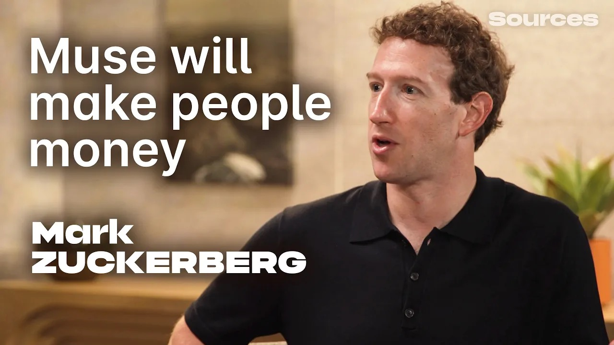

Voices · SOURCES PODCAST
Mark Zuckerberg Interview
Muse and Personal Superintelligence
Published · Sources Podcast

Mark Zuckerberg joins host Alex Heath to discuss Muse’s uses and pricing, personal agent privacy, and AI research and safety. Explore Meta’s plan to bring personal superintelligence to everyone—and the questions it raises.
- Video length
- 1:10:10
- Official chapters
- 11 chapters
- Original English transcript
- English transcript
CARROT CAVE INSIGHTS
Editor insights — The following is a summary and interpretation of the interview, not the original English transcript or direct quotations.
- Zuckerberg sees AI’s role as inventing new things rather than automating existing work, emphasizing distributed power and checks and balances over restricted access. Chapter 1
- The idea of helping Muse users earn and save money aligns with the goal of making personal superintelligence free for many. This is a direction outlined in the interview, not a promise of guaranteed earnings. Chapter 5
- Trust in a personal agent depends on more than how many services it can connect to. The permissions granted from the outset matter, as illustrated by connecting email with read-only access. Chapter 6
Sources and transcript notes
- Original title: Mark Zuckerberg on how Meta's Muse AI agent will make people money
- Guest: Mark Zuckerberg · Meta
- Host: Alex Heath · Sources Podcast
- Published: Sources Podcast, . Video length: 1:10:10 (4210 seconds).
- Official source: Original interview on YouTube. Each chapter’s timestamp links to that point in the original video.
- Method: All 2145 saved YouTube English auto-caption cues were organized in their original order to present the original English transcript. The original 11 official chapter titles and boundaries were preserved; paragraphs spanning a boundary were placed according to their start time.
- Speaker labels: Paragraphs were split at speaker changes by checking the English source against the conversational context. Each turn is labeled with one speaker’s name; attributing brief interjections involves editorial judgment.
- Coverage: The complete auto-captions include the introduction, main conversation, and sponsor ads. Captions run from 0.32 seconds to 4192.799 seconds (1:09:52.799). An audio check confirmed that the interval from the last caption to the video’s end at 4210 seconds (1:10:10) is silent, with no further speech.
- Files: Original English transcript (.json) · Raw English auto-captions (.json)
Full original English transcript
Loading the original English transcript…
Could not load the English transcript. Refresh the page or use the official video and file download links above.